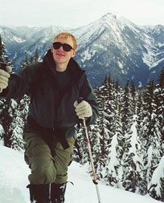
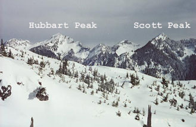

Mineral Butte
Peter and I had a day to spend in the mountains, so we looked for something fun to do. Thursday night, it had snowed in the lowlands, and we awakened to a foot of snow on our driveway! This was a first. It also set the theme for our climb. We knew that avalanche danger was moderate or high due to the huge dump of snow, so we looked for something resembling a hike, or that traveled a forested ridge to be safe. Fellow climber Stefan had sent me a trip report of a climb of Troublesome Mountain, just off the Index/Galena road, and this sounded really fun. Close to this mountain was Mineral Butte, which had the nice properties of logging road access to a high point and cross country travel on a narrowing forested ridge to an open summit.


Since the start would be easy to find, and the overall route lower angle, we went with Mineral Butte. Peter coaxed me into driving the RAV4 an alarming distance up the snow-covered logging road on the mountain’s south flank. I was gripped, thinking each snowy hummock we lurched over would be the last. Then would come the shovel/tow-truck debacle to consume the rest of the day. But he knew his stuff, and finally conceded that we stop at an area with room to pull over.
We hiked the road that switch-backed up the east side of the mountain, eventually getting into deep snow. We had great local views of Spire Mountain, and occasionally the Index Peaks to the south. It’s so much fun to go someplace new and learn more about the local terrain.
Soon we came to a steepish gully, and I convinced Peter we should climb it to the next (last?) road switchback. The gully alternated between deep powder and hard crust under a small powder layer. You either wallowed, or feared slipping. Peter traversed out, preferring scrubby trees on the left slope. I finished the gully, and we met on top near a road switchback. This had been a pretty exhausting option! Vowing to follow the road all the way when we returned, we hiked the road some more, then preferred to leave it again in an old clear cut. The problem was that the snow was so deep and tiring that we couldn’t stand the extra X feet of walking the road required! After the clear-cut, we emerged at the end of the road and reached virgin forest.
Peter took a compass bearing and we entered the forest, finally feeling “alone” away from the presence of road/clearcut/sign. We found a clear area with a view and ate some lunch. Continuing, we took turns creating tracks in the deepening snow, very tiring work! Finally, we could see the mountain and it looked quite far away. But we were determined, so as the forest thinned we ascended the ridge towards our goal. The sun came out, giving us a beautiful day amid the peaks.
On open slopes several hundred feet below the summit we were stopped cold by a large obvious “windslab” of snow. This was formed by constant winds blowing up the steep east face, bringing cold pellets of snow, and packing them down all across our slope. Peter had a look down the east face, then suggested digging a snow pit to evaluate conditions. In 5 minutes he had a decent pit, and we noted an obvious crust several feet down, with more crusts below that. We used a shovel to perform a “shear test,” to see how easily the top layer would slide. I can report it did this very easily! There was no way we would finish the climb here.
So we decided to traverse beneath the slab on better, powdery snow. We hoped to connect with trees off to the side, and sneak up to the summit among them. After the traverse, I came to an obvious division between the slab and powder. Trying to “climb up onto” the hard slab, I released a chunk of it which separated and slid down the slope some distance. This kind of bothered me, and I began to accept that we couldn’t do the last bit in these conditions. We pinned our hopes on a tree island only 15 vertical feet away, but couldn’t find a safe way to get there. What is interesting is that the angle of the slope we were on felt very moderate, it must have been 25 degrees. But even this moderate terrain can be dangerous under the right conditions.
It seemed possible to continue traversing to another basin, then follow a west ridge to the summit. As far as we could see this ridge was tree covered. But it was a long ways away and we’d lose elevation to get there. We made this our high point, and I called Kris to say we were heading back. We’d definitely gotten some good exercise, and could save this summit for another visit.
Going down was pretty quick and we decided to bury avalanche beacons and have a mock search where we ate lunch. This was good practice. After taking in the view of Scott and Hubbard Peaks for a while, we continued down to the troublesome gully we found on the way up. We decided that a nice “short cut” would be to head down a steep but stable snow slope into forest far to the side of the gully. (We broke our own rule about following the road!) This turned into a mini-adventure of it’s own when we navigated cliffy broken log terrain. The final downclimb offered a choice, and I stuck to hanging by tree roots and vines with the occasional good step in the snow, while Peter traversed over to a gully. He intentionally sent down several snow slides, which served the purpose of clearing the soft snow and providing better footing. I entered his gully at a lower point, thanking him for this fruitful control work!
From here, we considered another shortcut, where Peter thought he saw a road below. Looking at the map, the next road below would probably be at the car, 1700 feet lower. So he didn’t see a road, and it was getting dark. Reluctantly, we gave up on this short cut and scurried down the road in gathering gloom. Our decision making process was interesting: I was insisting that if we needed to take a compass bearing for this short cut, it would end up as a “long cut.” Peter wasn’t willing to try it without a bearing. So by our fixed positions on the matter, we took the road!
Later, we had another short cut decision, and at once agreed to risk it. Nice, moderate open slopes, and certainty of the road on a switchback below. We reached the car just after full dark. This was a great and somewhat unusual destination for a winter day. Hint to skiers: this would make a great ski tour.